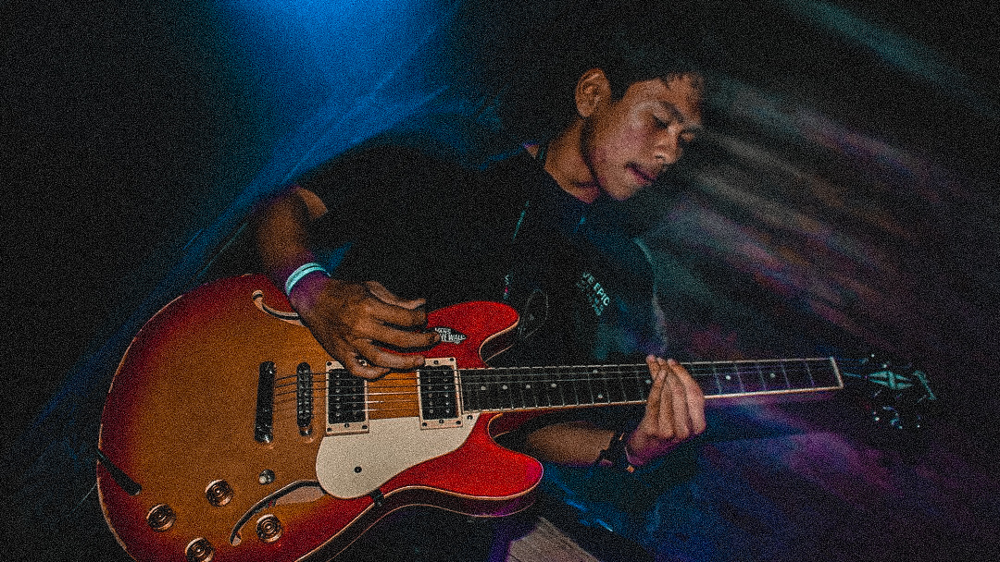

Octa Toriq

Summary
I'm a tech enthusiast and a hardworking person as an engineer
Education
- Mechatronics Engineering - Vocational high school 2 of Cimahi (2018 - 2022)
- Bachelor of Informatics Engineering - ULBI (2023 - 2027)
Work Experience
Skills
- Welding : ⭐️⭐️⭐️
- Mechanics : ⭐️⭐️⭐️
- Electrical : ⭐️⭐️⭐️⭐️
- PLC Programming : ⭐️⭐️⭐️
- English : ⭐️⭐️⭐️⭐️
Awards and Certification
- TOEIC Sertificate Score 705 / Lv.3 Intermediate
- BNI Band Competition First Place of Cimahi
- Teknologi tepat guna / TTG Kota Cimahi First Place
Other